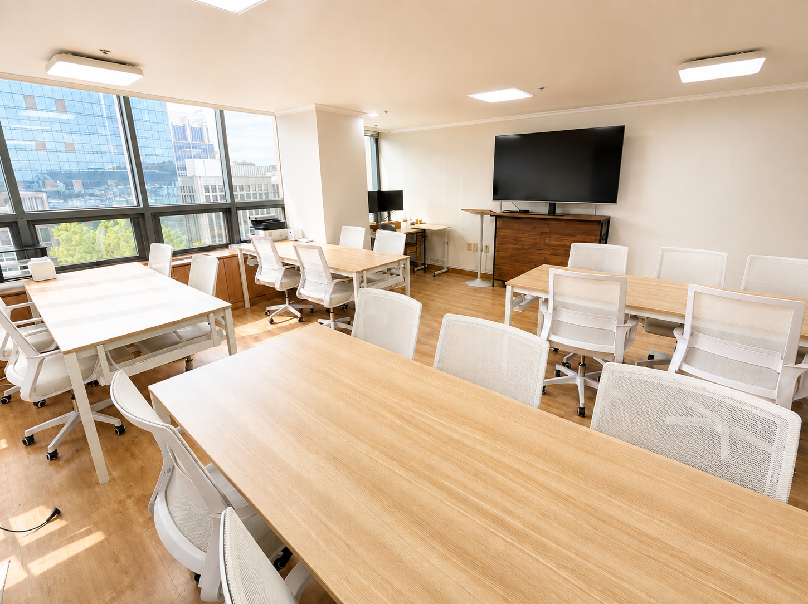
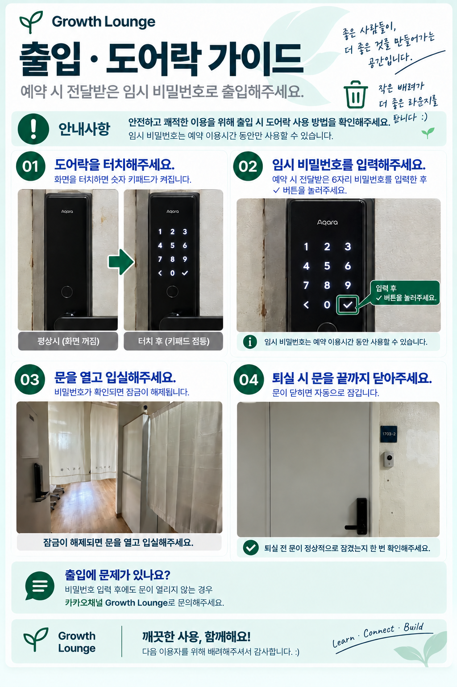

Welcome!
라운지 이용에 필요한 정보를 빠르게 확인하세요.

DOOR LOCK
출입 · 도어락
예약 시 전달받은 임시 비밀번호로 출입해주세요.
- 입실
- 도어락을 터치한 뒤 전달받은 임시 비밀번호와 확인 버튼을 눌러주세요.
- 퇴실
- 문을 끝까지 닫고 자동 잠금 상태를 확인해주세요.

CONNECT
Wi-Fi
빠르고 편안하게 인터넷을 이용하세요.
NETWORKGROWTH LAUNGEPASSWORDgrowth1703-2!
DISPLAY
TV 이용
HDMI를 이용해 노트북을 연결할 수 있습니다.
- TV 전원
- 외부입력
- HDMI 3
- 노트북 연결

RESTROOM
화장실
3층 또는 5층의 남·녀 화장실을 이용해주세요.
3F남·녀 화장실
5F남·녀 화장실

WASTE GUIDE
쓰레기
쓰레기 종류에 맞는 위치를 확인해주세요.
- 비품 위치
- 전자레인지 위쪽 수납장
- 일반쓰레기
- 오른쪽 신발장 옆 커튼 안쪽 세면대 아래
- 라운지 분리수거
- 같은 공간의 4칸 분리수거함
- 재활용 쓰레기
- B3F 엘리베이터에서 내린 후 왼쪽 문
- 음식물 쓰레기
- B3F 엘리베이터에서 내린 후 오른쪽 주차장 벽면

CHECK OUT
퇴실하기
다음 이용자를 위한 작은 배려입니다.
8개 항목을 확인해주세요.

SAFETY
CCTV 촬영 안내
안전하고 쾌적한 공간 운영을 위해 CCTV가 운영되고 있습니다.
- 촬영 목적
- 시설 안전, 화재 예방 및 범죄 방지, 시설 관리
- 촬영 범위
- 라운지 내부 공용 공간
- 촬영 시간
- 24시간 연중무휴